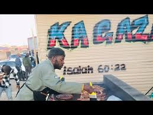
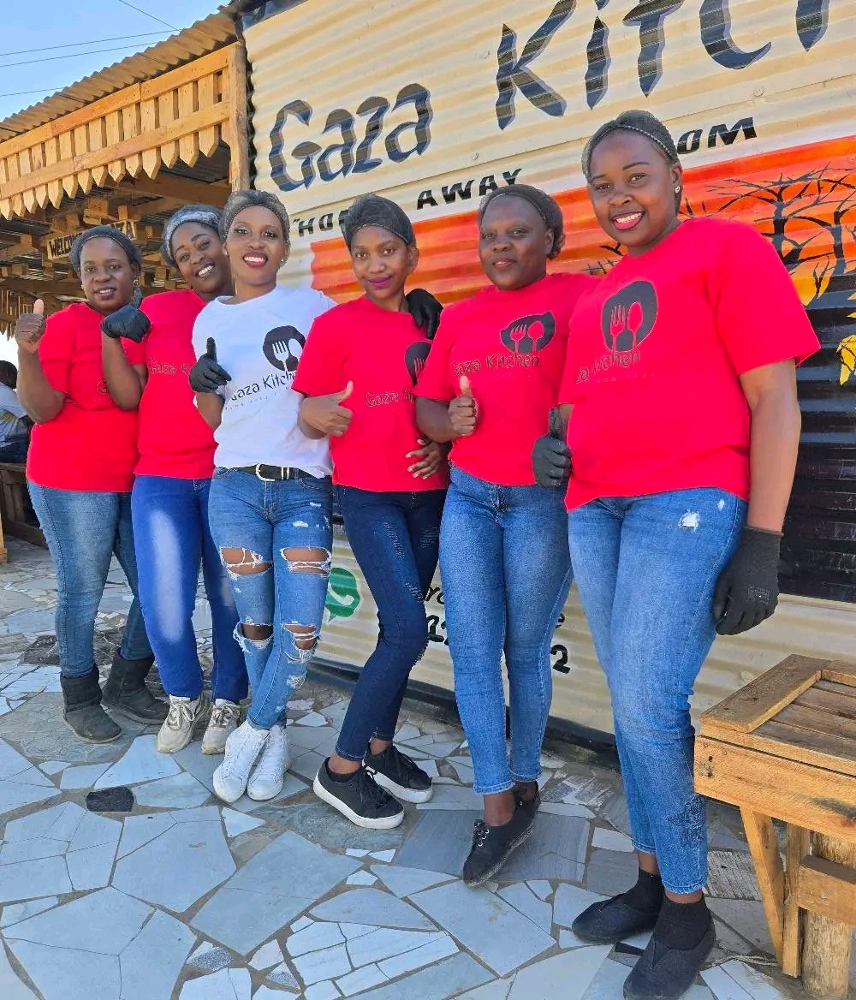

About Gaza Kitchen
Our Story
Gaza Kitchen was founded with a simple vision: to bring people together over food that feels like home. Our motto, "Home Away from Home," reflects our dedication to creating warm, welcoming meals inspired by tradition and made with love.
Meet Our Chef
Chef Philani brings 3 months of valuable experience as a former Head Chef in a five-star hotel. With a passion for blending authentic flavors and traditional cooking techniques, he crafts every dish to celebrate culture, taste, and community.
Our Mission
We believe food is more than just nourishment — it’s a connection. That’s why we use fresh, locally sourced ingredients and prepare every meal with care, ensuring that every plate carries the warmth of family tradition.
Signature Dishes
Our guests love our spiced lamb curry, slow-cooked stews, and freshly baked homemade flatbreads. Each dish is crafted to blend traditional flavors with a modern twist, making your dining experience unforgettable.
Our Team
Behind every meal is a passionate team of chefs, servers, and staff who work together to make your visit memorable. We treat every guest like family and strive to give you an experience worth coming back to.
Community & Culture
We are proud to support our local community by sourcing ingredients from nearby farmers and celebrating cultural traditions through food. Gaza Kitchen isn’t just a restaurant — it’s a gathering place for everyone.